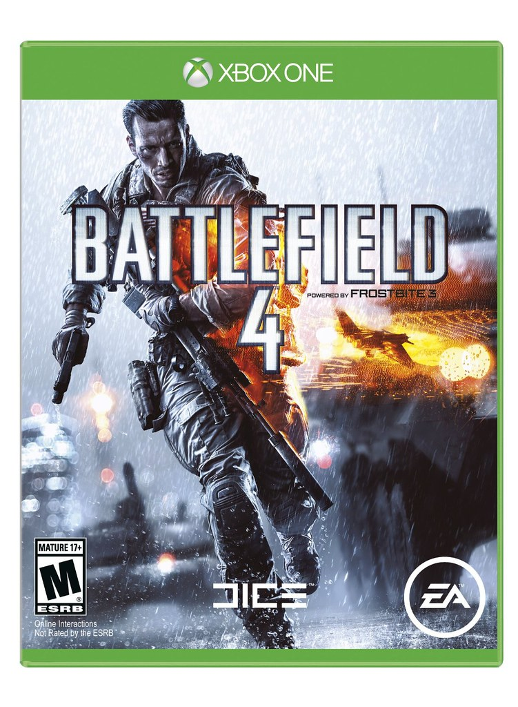

This page is about videogames
There are a lot of genres of video games, I am just going to name the main genres.
I like many games, some I am just going to name a few of the games, I will say the name of the franchise if I play multiple games of the same franchise.
The first game/franchise I think is best is the Battlefield franchise. because of the feel of the games, also the destruction elements of the game where you can make an entrance by blowing a hole into the wall, another reason is the graphics.
The second game/franchise I think is the best is the Assassin's Creed franchise. because of the parkour, the graphics, and the feel, also the animations.